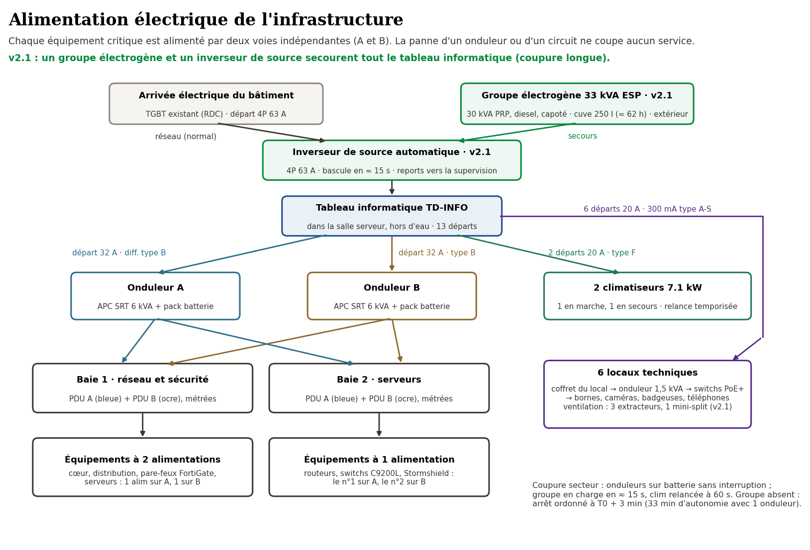
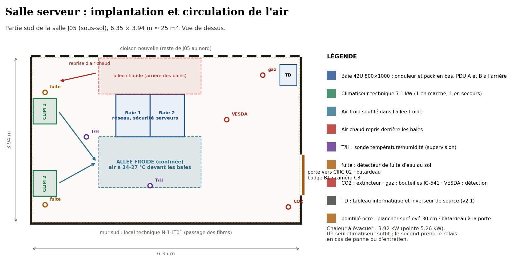

Site de Marseille · IUT Génie Télécom, Luminy · RudyLink Infrastructure · point 14 du cahier des charges · version 2.1 · 20/11/2026
Alimentation électrique, onduleurs, climatisation des locaux techniques, consommation et coûts de l'infrastructure réseau.
bet_locaux_techniques.pdf, inventaire dans bet_dissipation.csv). Changements : groupe électrogène 33 kVA ESP et inverseur de source (le client confirme qu'il n'y en a pas sur le site) ; ventilation renforcée de N0-LT02, N1-LT01, N1-LT02 (trop chauds en été) ; pertes réelles des onduleurs à faible charge et auxiliaires de la salle comptés (PUE corrigé) ; différentiels adaptés (type B, F, A SI) et coffret par local ; arrêt ordonné déclenché seulement si le groupe n'a pas repris.| v2 | v2.1 | |
|---|---|---|
| Puissance de la salle (typique) | 3460 W | 3492 W |
| PUE | 1.34 | 1.45 |
| Consommation annuelle | 53 510 kWh | 58 491 kWh |
| Investissement du lot | 71 900 € | 109 550 € |
| Coûts annuels du lot | 13 702 € | 16 879 € |
| Coût du lot sur 5 ans | 140 410 € | 193 945 € |
livrables/archives/v1_2026-11-15/ ; le traitement de chaque constat est dans livrables/audit/traitement_audit.pdf. Changements : 12 serveurs physiques remplacés par 4 hyperviseurs et un témoin (SYS-02), 3 nœuds NM ramenés à 2 + témoin (SYS-01), contrôleurs Wi-Fi physiques (NET-01), plancher surélevé, batardeau, détection de fuite et extinction automatique au gaz (SYS-03), arrêt ordonné sur batterie par NUT.| v1 | actuel (v2.1) | |
|---|---|---|
| Puissance de la salle (typique) | 4150 W | 3492 W |
| Consommation annuelle | 61 557 kWh | 58 491 kWh |
| Électricité par an | 12 311 € | 11 698 € |
| Investissement du lot | 57 000 € | 109 550 € |
| Demande | Source | Réponse | Partie |
|---|---|---|---|
| Locaux techniques : rack, alimentation électrique, climatisation, accès par badge | Consignes, traitement A (architecture physique) | Salle serveur + 6 locaux, baies, onduleurs, clim/ventilation, badgeuses | 2, 3, 4 |
| Bilan de puissance par baie | Roadmap, point 14 | Bilan équipement par équipement, baie par baie et local par local | 2 |
| Dimensionner les onduleurs | Roadmap, point 14 | 2 onduleurs en ligne 6 kVA (voies A/B) + 6 onduleurs 1,5 kVA, autonomie vérifiée | 3 |
| Climatisation de la salle serveur | Roadmap, point 14 | 2 climatiseurs techniques (1 en secours), allée froide, ventilation des locaux | 4 |
| Mesure de consommation, PUE et Green IT ; développement durable obligatoire | Roadmap ; consignes (DD, green IT) | PDU et sondes supervisées, PUE calculé, 3 mesures d'économie chiffrées | 5 |
| Data center : règles de base, PRA | Consignes, traitement C | Redondance électrique et frigorifique ; le PRA complet est traité au point 15 | 3, 4 |
| Continuité en cas de coupure longue v2.1 | Client (pas de groupe sur le site) | Groupe électrogène 33 kVA ESP + inverseur automatique ; étude BET de chaque local | 3, BET |
| Chiffrage « carte blanche mais réaliste » | Consignes | Investissement, coûts annuels, économies, coût sur 5 ans, options écartées | 6 |
Puissances relevées sur les fiches constructeur (valeur typique et maximale). La pointe réaliste retient 80 % de la somme des maxima, car tous les équipements ne sont jamais au maximum en même temps.
| Baie | Équipements | Modèle | Nb | Alim. | Typique | Max. |
|---|---|---|---|---|---|---|
| 1 | EL-RTR1, EL-RTR2 | Cisco C8200L-1N-4T | 2 | 1 | 40 W | 60 W |
| 1 | EL-FGT1, EL-FGT2 | FortiGate 120G | 2 | 2 | 80 W | 130 W |
| 1 | EL-SW1, EL-SW2 | Cisco C9200L-24T-4X | 2 | 1 | 80 W | 120 W |
| 1 | EL-SNS1, EL-SNS2 | Stormshield SN710 | 2 | 1 | 90 W | 140 W |
| 1 | DM-SW1, DM-SW2 | Cisco C9200L-24T-4X | 2 | 1 | 80 W | 120 W |
| 1 | CL-SW1, CL-SW2 | Cisco C9500-16X | 2 | 2 | 320 W | 520 W |
| 1 | DL-SW1 à DL-SW4 | Cisco C9500-16X | 4 | 2 | 640 W | 1 040 W |
| 1 | NM-SW1, NM-SW2 | Cisco C9200L-24T-4X | 2 | 1 | 80 W | 120 W |
| 1 | WLC1, WLC2 | Cisco Catalyst 9800-L-F | 2 | 1 | 110 W | 180 W |
| 1 | Tiroirs optiques | Rocades et adductions | 3 | — | 0 W | 0 W |
| 2 | DM-PVE1, DM-PVE2 (VM de la DMZ) | Dell PowerEdge R360 | 2 | 2 | 240 W | 400 W |
| 2 | NM-WITNESS, DM-WITNESS | Dell PowerEdge R260 (entrée de gamme) | 2 | 2 | 120 W | 220 W |
| 2 | DT-SW1, DT-SW2 | Cisco C9300X-12Y | 2 | 2 | 260 W | 440 W |
| 2 | DT-PVE1, DT-PVE2 (VM AD, NPS, DHCP) | Dell PowerEdge R660xs | 2 | 2 | 480 W | 800 W |
| 2 | NM-PVE1, NM-PVE2 | Dell PowerEdge R660xs | 2 | 2 | 520 W | 840 W |
| 2 | DT-BKP1 | Dell PowerEdge R760xd2 | 1 | 2 | 320 W | 480 W |
| 1 | PDU-1A, PDU-1B | PDU métrée et managée 16 A (électronique) | 2 | 1 | 16 W | 20 W |
| 2 | PDU-2A, PDU-2B | PDU métrée et managée 16 A (électronique) | 2 | 1 | 16 W | 20 W |
| Baie 1 (réseau, sécurité) : 30U occupés sur 42 · Baie 2 (serveurs) : 19U | 3 492 W | 5 650 W | ||||
Salle serveur : 3.49 kW en fonctionnement normal, 4.52 kW en pointe réaliste.
| Local | Switchs | PoE typique | PoE max. | Charge typique | Charge max. |
|---|---|---|---|---|---|
| N-1-LT01 | 1 | 52 W | 103 W | 113 W | 179 W |
| N-1-LT02 | 1 | 36 W | 70 W | 95 W | 143 W |
| N0-LT01 | 2 | 172 W | 333 W | 301 W | 500 W |
| N0-LT02 | 4 | 202 W | 385 W | 444 W | 688 W |
| N1-LT01 | 2 | 98 W | 192 W | 219 W | 343 W |
| N1-LT02 | 5 | 136 W | 262 W | 426 W | 616 W |
PoE : alimentation des bornes Wi-Fi, caméras, badgeuses et téléphones par leur câble réseau. « Max. » = puissance réservée par le switch (classe PoE) ; « typique » = consommation réelle moyenne.

| Situation | Charge d'un onduleur | Taux | Autonomie |
|---|---|---|---|
| Normale (les deux onduleurs se partagent la charge) | 1 746 W | 29 % | 84 min |
| Un onduleur en panne : l'autre porte tout | 3 236 W | 54 % | 33 min |
| Un onduleur en panne, en pointe | 4 208 W | 70 % | — |
✔ Règle de dimensionnement : moins de 80 % en marche normale (29 %) et moins de 90 % pour un onduleur seul en pointe (70 %), situation rare qui cumule une panne et une pointe. Des onduleurs de 8 kVA (≈ 2 800 € de plus) ne sont donc pas nécessaires. Sans batterie supplémentaire, l'autonomie avec un seul onduleur ne serait que de 11.1 min : on ajoute un pack batterie par onduleur pour dépasser l'objectif de 20 min : la séquence d'arrêt ordonné (attente du groupe 3 min puis 8 min d'arrêt, voir plus bas) doit tenir avec une marge, même si un onduleur est en panne et que ses batteries sont en fin de vie.
| Local | Charge max. | Taux | Autonomie |
|---|---|---|---|
| N-1-LT01 | 179 W | 18 % | 157 min |
| N-1-LT02 | 143 W | 14 % | 243 min |
| N0-LT01 | 500 W | 50 % | 22 min |
| N0-LT02 | 688 W | 69 % | 12 min |
| N1-LT01 | 343 W | 34 % | 45 min |
| N1-LT02 | 616 W | 62 % | 15 min |
Chaque local a son départ 20 A dédié vers un petit coffret (différentiels 30 mA adaptés) v2.1. Les bornes, les téléphones et les badgeuses restent alimentés pendant une coupure : quelques minutes sur l'onduleur, puis par le groupe électrogène. Autonomies : courbes constructeur indicatives, à confirmer avec l'outil du fabricant.
Le client confirme qu'il n'y a pas de groupe électrogène sur le site : ce n'est plus une option. Un groupe dédié secourt tout le tableau informatique : salle serveur (onduleurs, climatiseurs, éclairage, sécurité) et les 6 locaux techniques (Wi-Fi, téléphonie IP, badgeuses et caméras restent en service pendant une coupure longue). Le reste du bâtiment n'est pas secouru.
Dimensionnement, séquence de reprise, carburant, raccordement, réglementation : bet_locaux_techniques.pdf, section 4.
Avec le groupe électrogène, l'onduleur ne fait plus que le pont pendant les ≈ 15 s de son démarrage. L'arrêt ordonné reste indispensable si le groupe ne démarre pas (sa panne la plus fréquente) : un hyperviseur coupé brutalement peut abîmer ses disques ou ses VM. Les cartes réseau des deux onduleurs (VLAN 900) sont lues par NUT (Network UPS Tools), dont le serveur tourne sur le témoin NM-WITNESS. Ce petit serveur physique s'éteint en dernier. Les hyperviseurs, le PBS et les témoins sont clients NUT.
| Moment | Action |
|---|---|
| T0 : coupure secteur | Les onduleurs basculent sur batterie sans interruption ; le groupe démarre. Alerte (supervision, courriel, SMS d'astreinte). |
| T0 + 15 s | Le groupe est en tension, l'inverseur bascule : les onduleurs repassent « en ligne ». NUT annule son minuteur : rien ne s'arrête. |
| T0 + 3 min | Si l'onduleur est encore sur batterie (groupe en défaut après trois tentatives, inverseur bloqué) : arrêt des VM non essentielles (supervision, VM applicatives de la DMZ). v2 : T0 + 5 min. |
| T0 + 6 min | Arrêt des VM d'infrastructure : DHCP, NPS, Teleport, journaux (après vidage de leurs files d'attente), puis des contrôleurs de domaine. |
| T0 + 9 min | Arrêt des hyperviseurs (DT, DM, NM) et du serveur de sauvegarde, une fois leurs VM arrêtées. |
| T0 + 11 min | Arrêt de NM-WITNESS. Les onduleurs coupent leurs sorties serveurs. Les switchs et pare-feu restent alimentés jusqu'à l'épuisement des batteries (≈ 33 min avec un seul onduleur), car ils redémarrent sans risque. |
| Retour du secteur | Les onduleurs ne rallument les serveurs que lorsque leurs batteries sont rechargées à 40 % (une seconde coupure ne doit pas les surprendre à vide). Le démarrage suit l'ordre inverse : témoins, hyperviseurs, puis les VM selon leur ordre de démarrage Proxmox. |
Réglage NUT (upssched) : un minuteur de 3 min démarre au passage sur batterie et s'annule au retour en ligne. Deux déclencheurs de sécurité s'ajoutent : autonomie restante annoncée inférieure à 15 min, et température d'allée froide supérieure à 35 °C (sans groupe, les climatiseurs ne sont pas secourus). La séquence est finie à T0 + 11 min, même avec un seul onduleur (33 min d'autonomie, 26 min en fin de vie des batteries). Elle est testée une fois par an, groupe volontairement bloqué.

Toute l'électricité consommée devient de la chaleur. À évacuer : 3.92 kW en fonctionnement normal et 5.26 kW en pointe (équipements, pertes des onduleurs, auxiliaires de sécurité et tableau v2.1, éclairage, une personne).
La salle est au sous-sol, où une inondation (épisode méditerranéen, canalisation) est le premier risque, et un incendie de nuit le second (constat SYS-03 de l'audit). En v1, ces protections étaient des options écartées. Elles font maintenant partie du lot :
| Local | Surface | Chaleur typique | Pointe été | Solution v2 | Solution retenue | T été |
|---|---|---|---|---|---|---|
| N-1-LT01 | 7 m² | 75 W | 246 W | grilles | grilles hautes et basses (ventilation naturelle) | 32.1 °C |
| N-1-LT02 | 16 m² | 73 W | 316 W | grilles | grilles hautes et basses (ventilation naturelle) | 33.6 °C |
| N0-LT01 | 2 m² | 147 W | 307 W | extracteur 150 m³/h | extracteur thermostaté 150 m³/h | 33.1 °C |
| N0-LT02 | 7 m² | 263 W | 484 W | extracteur 150 m³/h | extracteur thermostaté 300 m³/h v2.1 | 31.8 °C |
| N1-LT01 | 4 m² | 152 W | 337 W | extracteur 150 m³/h | extracteur thermostaté 300 m³/h v2.1 | 33.4 °C |
| N1-LT02 | 7 m² | 337 W | 597 W | extracteur 150 m³/h | mini-split 2,5 kW froid v2.1 | 27.0 °C |
Les locaux dégagent peu de chaleur : la puissance PoE est dissipée par les bornes et caméras, pas dans le local ; seules les pertes de conversion des switchs et de l'onduleur y restent. Pointe été : tout au maximum, un technicien et l'éclairage, avec l'air des circulations à 24 °C au sous-sol, 27 °C au RDC et 30 °C à l'étage sous la toiture. Critère : 35 °C au plus (onduleurs limités à 40 °C). La v2 appliquait une règle forfaitaire ; le BET de la v2.1 a montré que 3 locaux devenaient trop chauds l'été (N0-LT02 : extracteur 300 m³/h, N1-LT01 : extracteur 300 m³/h, N1-LT02 : mini-split 2,5 kW). Calcul complet : bet_locaux_techniques.pdf, section 3.
PUE (efficacité énergétique) = électricité totale de la salle ÷ électricité des équipements informatiques. 1,0 serait parfait.
| Salle serveur | Salle classique (22 °C) | Notre proposition |
|---|---|---|
| Équipements informatiques | 3.49 kW | 3.49 kW |
| Climatisation, pertes onduleurs, auxiliaires, éclairage, réchauffeur du groupe v2.1 | 1.85 kW | 1.59 kW |
| PUE | 1.53 | 1.45 |
Mesure en continu : les PDU métrées (par prise), les onduleurs et les sondes sont interrogés par la supervision déjà prévue (LibreNMS et Grafana, zone NM). Le PUE réel est suivi chaque mois : la valeur ci-dessus est une estimation à confirmer.
| Mesure | kWh/an | €/an | CO₂/an | Coût | Retour |
|---|---|---|---|---|---|
| Consigne de la salle à 27 °C au lieu de 22 °C (plage recommandée ASHRAE A1 : 18-27 °C) | 1 347 | 269 € | 70 kg | 0 € | immédiat |
| Allée froide confinée (obturateurs de U vides, rideaux aux extrémités) | 1 010 | 202 € | 53 kg | 1 200 € | 5.9 ans |
| Coupure programmée de 30 bornes Wi-Fi des salles la nuit et le week-end (103 h/semaine) | 2 321 | 464 € | 121 kg | 0 € | immédiat |
Avec ces mesures, le réseau consomme 58 491 kWh/an au lieu de 63 170, soit 936 € économisés chaque année. Électricité française peu carbonée : ≈ 3.0 t de CO₂ par an.
| Piste | Puissance en moins | kWh/an | €/an |
|---|---|---|---|
| Cœur replié : suppression de DL-SW1 à DL-SW4 (variante étudiée, non retenue : CdC en 3 couches) | 640 W | 8 156 | 1 631 € |
Économies d'électricité en plus des économies d'achat déjà indiquées dans le chiffrage.
| Élément | Où | Qté | Prix unitaire | Total | Remarque |
|---|---|---|---|---|---|
| Baie 42U 800x1000 avec portes ventilées | Salle serveur | 2 | 1 500 € | 3 000 € | |
| Baie 24U murale/sol | Locaux techniques (6 L.TECH) | 5 | 700 € | 3 500 € | 2 L.TECH par niveau d'après les plans |
| Baie 42U 600x800 au sol | Locaux techniques | 1 | 1 200 € | 1 200 € | L.TECH dont la baie dépasse 22U (plan de câblage) |
| Onduleur APC Smart-UPS SRT 6 kVA (en ligne) | Salle serveur | 2 | 4 800 € | 9 600 € | Alimentation A/B |
| Onduleur 1,5 kVA rackable | Locaux techniques | 6 | 900 € | 5 400 € | |
| PDU managées et métrées | Salle serveur | 4 | 700 € | 2 800 € | Mesure de consommation (Green IT) |
| Climatisation de précision ~7 kW, redondance N+1 | Salle serveur | 1 | 12 000 € | 12 000 € | |
| Contrôle d'accès par badge | Salle serveur + L.TECH | 1 | 5 000 € | 5 000 € | |
| Pack batterie externe APC SRT192RMBP (1 par onduleur) (ajouté) | Salle serveur | 2 | 1 400 € | 2 800 € | Autonomie si un onduleur tombe : 11.1 min sans pack, 33 min avec |
| Tableau électrique informatique (TD-INFO) et circuits dédiés v2.1 | Salle serveur + L.TECH | 1 | 6 800 € | 6 800 € | 2 départs 32 A onduleurs (différentiel type B), 2 départs 20 A clim (type F), 6 départs 20 A L.TECH, éclairage, prises, auxiliaires. v2.1 : différentiels adaptés (BET) |
| Confinement d'allée froide (obturateurs, rideaux) (ajouté) | Salle serveur | 1 | 1 200 € | 1 200 € | Green IT : -10 % sur la clim |
| Sondes température/humidité et détection de fuite d'eau (ajouté) | Salle serveur + L.TECH | 1 | 1 200 € | 1 200 € | Remontées dans LibreNMS ; fuite : salle au sous-sol |
| Détection incendie raccordée au SSI + extincteurs CO2 (ajouté) | Salle serveur | 1 | 1 500 € | 1 500 € | Report d'alarme au SSI du bâtiment |
| Extinction automatique par gaz inerte (IG-541) + détection précoce par aspiration (VESDA) (ajouté) | Salle serveur | 1 | 8 500 € | 8 500 € | v2 (audit SYS-03) : un incendie la nuit ne détruit plus la salle. Gaz inerte : sans danger pour le matériel |
| Plancher technique surélevé 30 cm, baies et onduleurs sur socles (ajouté) | Salle serveur | 25 | 160 € | 4 000 € | v2 (SYS-03) : matériel hors d'eau en cas d'inondation du sous-sol (prix au m²) |
| Batardeau amovible à la porte (60 cm) + clapet anti-retour sur l'évacuation des condensats (ajouté) | Salle serveur | 1 | 1 500 € | 1 500 € | v2 (SYS-03) : retarde l'entrée de l'eau par la circulation |
| Câble de détection de fuite sous le plancher (centrale + 20 m) (ajouté) | Salle serveur | 1 | 900 € | 900 € | v2 (SYS-03) : alerte dès les premiers centimètres, avant que l'eau n'atteigne le matériel |
| Extracteur d'air de gaine avec thermostat (150 ou 300 m³/h) v2.1 | Locaux techniques | 3 | 450 € | 1 350 € | v2.1 : débit vérifié pour l'été par le BET (N0-LT01 150 m³/h, N0-LT02 300 m³/h, N1-LT01 300 m³/h) |
| Mini-split 2,5 kW froid (unité extérieure en toiture-terrasse) v2.1 | Locaux techniques | 1 | 3 200 € | 3 200 € | v2.1 (BET) : N1-LT02 trop chaud en été sous la toiture, même avec un extracteur |
| Coffret électrique de L.TECH (différentiels 30 mA type A SI et F, prise détrompée de l'onduleur) v2.1 | Locaux techniques | 6 | 350 € | 2 100 € | v2.1 (BET) : protections adaptées aux onduleurs et aux ventilateurs |
| Groupe électrogène diesel 33 kVA ESP / 30 kVA PRP, capoté insonorisé, cuve double paroi 250 l, démarrage automatique v2.1 | Extérieur, façade est | 1 | 17 500 € | 17 500 € | v2.1 : le site n'a pas de groupe. Groupe 30 kVA capoté : 15 à 20 k€ HT fourni chez les distributeurs (ordre de grandeur) |
| Inverseur de source automatique 4P 63 A (NF EN 60947-6-1), coffret, reports d'état v2.1 | TD-INFO | 1 | 3 500 € | 3 500 € | v2.1 : bascule réseau / groupe en tête du tableau informatique. Appareil ≈ 1,5 à 2 k€, plus coffret, pose et mise en service |
| Génie civil : dalle béton armé ≈ 3 × 2 m, fourreaux, clôture et portillon v2.1 | Extérieur, façade est | 1 | 4 500 € | 4 500 € | v2.1 : ordre de grandeur d'entreprise de génie civil |
| Raccordement : câble 5G16 mm² (≈ 60 m) en fourreau, câble de commande, départ 4P 63 A au TGBT, circuit des auxiliaires du groupe v2.1 | GE → TD-INFO, TGBT | 1 | 4 000 € | 4 000 € | v2.1 : ≈ 40 €/m posé pour le câble de puissance, plus l'appareillage |
| Transport, levage, mise en service, essai de réception sur banc de charge (4 h), premier plein, formation v2.1 | Groupe électrogène | 1 | 2 500 € | 2 500 € | v2.1 : forfait installateur |
| Total du lot | 109 550 € | ||||
| Poste | Détail | Par an |
|---|---|---|
| Électricité du réseau | 58 491 kWh/an × 0.20 € (salle serveur, PUE 1.45, 6 locaux techniques) | 11 698 € |
| Maintenance de la climatisation | Contrat d'entretien, 2 unités | 900 € |
| Provision batteries d'onduleurs | Remplacement tous les 5 ans (salle) et tous les 4 ans (L.TECH, v2.1), lissé par an | 1 575 € |
| Maintenance de l'extinction automatique | Visite annuelle obligatoire (APSAD R13), contrôle des bouteilles | 600 € |
| Maintenance du groupe électrogène et de l'inverseur | v2.1 : contrat de 2 visites par an (vidange, filtres, liquide, batterie de démarrage, contrôle de l'inverseur) | 1 100 € |
| Essai annuel du groupe sur banc de charge | v2.1 : location du banc et technicien, 2 h à 75 % de la PRP | 700 € |
| Gazole du groupe électrogène | v2.1 : 54 l/an × 1.40 € (essais mensuels, banc, coupures) + analyse et traitement du gazole | 156 € |
| Maintenance du mini-split des L.TECH | v2.1 : visite annuelle (filtres, contrôle d'étanchéité) | 150 € |
| Total par an | 16 879 € | |
Coût du lot sur 5 ans : 193 945 € (investissement + 5 années de fonctionnement). Ces montants sont intégrés au chiffrage global du projet (chiffrage/estimation_infra.md).
| Option | Coût | Pourquoi |
|---|---|---|
| Groupe électrogène en toiture-terrasse ou dans le parking du sous-sol | — | v2.1 : écartés (structure et livraison du gazole en toiture ; local coupe-feu, air et échappement dans le parking). Le groupe retenu est à l'extérieur, façade est (étude BET) |
| Climatiser tous les locaux techniques | 16 000 € | Inutile : grilles ou extracteur suffisent hors de l'étage sous toiture (étude BET, section 3) |
| Déplacer la salle serveur au RDC (hors zone inondable) | — | Aucune salle de 25 m² libre hors des salles d'enseignement ; le sous-sol garde les rocades les plus courtes. Risque d'eau traité par le plancher, le batardeau et la détection |
| Armoires de climatisation de précision (au lieu de 2 climatiseurs techniques) | 16 000 € | Surcoût ; utile au-delà de ~10 kW |
| Free-cooling (air extérieur) | — | Non faisable : salle au sous-sol sans accès à l'air extérieur |
Étude BET détaillée (inventaire par local, ventilation, circuits, groupe électrogène, vérifications) : bet_locaux_techniques.pdf (RLI-NRJ-002).